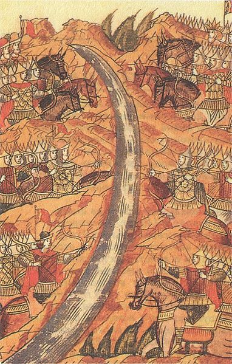

В прошлом выпуске Тохтамыш огреб заслуженные охапки тамерланского возмездия и спрятался в районе Тюмени. Тимур ушел обратно на юг к великой печали индусов и турок.

Молодой и горячий монгольский хан еще не раз выбегал из Сибири, где получил политическое убежище, в тщетных попытках отобрать Сарай и главенство в Орде.
Одним из наиболее эпичных моментов была битва на реке Ворскле. Предыстория такова: Тохтамыш, в очередной раз получив по голове от текущего хана Тимур-Кутлуга, прибежал в Киев просить прощения за старое и развивать безумные бизнес-прожекты. Перед изумленным князем Витовтом нарисовались перспективы союза с Ордой при условии что Тохтамышу помогут, и он снова будет там самым-самым главным. Витовт решил рискнуть и подрядил всех своих союзников на это благое дело.
Так в 1399 году на реке Ворскле собрались лебедь, рак и щука. То есть, войска Великого княжества Литовского, некоторых русских княжеств, Молдавского княжества, бойцы из Валахии и — барабанная дробь! — рыцари Тевтонского ордена. Ну и небольшая группка монголов, оставшихся с Тохтамышем. Как вся эта разношерстная толпа находила общий язык, понять затруднительно. Равно как и сложно догадаться, о чем думали тевтонцы и молдаване, вписываясь в данный замес.
Несмотря на такую звездную команду, войска Тимур-Кутлуга все равно разбили сборную солянку наголову. Разгневанный Витовт в нелицеприятных выражениях обрисовал Тохтамышу, где он конкретно видел все проекты бывшего хана, после чего отослал от двора. Тохтамыш еще какое-то время метался по степям с призывами собраться и отмстить неправильным татарам, но на такие предложения уже никто не откликался - все успели понять, куда приводят такие мечты. Сарай, к тому же, едва-едва успели отстроить после Тамерлана, а из-за кого он пришел на Орду, еще не позабылось. Печальный экс-хан даже пытался отправлять к Тимуру посольства, но об их судьбе история умалчивает.
Так побегав по степям еще несколько лет, Тохтамыш нашел свой конец в лесах рядом с Тюменью. Порядком доставший всех неуемный и неумный гражданин был зарезан по приказу другого хана, которому уже обрыдли постоянные предложения движухи с непредсказуемыми последствиями.
Чем занимался Тамерлан? Успешно сокрушив индусов и османов, Тимур пошел войной на Китай, но в середине похода помер, к немалому облегчению китайцев. Как и водится после смерти жесткого лидера, между наследниками и теми, кто считал себя таковыми, немедленно началась грызня, которая и привела к скорому распаду южной империи.
На Руси тем временем отдыхали от постоянных набегов и решали внутренние проблемы. Монголы еще не раз пытались восстановить свой контроль над славянскими землями, но после разрушительного правления Тохтамыша и прохода Тамерлана Орда была уже не та. Небольшие локальные победы и даже пленение Василия II ничего монголам не дали — Русь уже сама начала вмешиваться во внутриордынские дела и пытаться назначить своих ханов. Хотя Рязанское княжество регулярно грабилось еще на протяжении лет 60 - плохая карма Олега давала о себе знать.
Финальным аккордом ига стало стояние на реке Угре. Но это примечательное историческое событие заслуживает отдельного выпуска, вне серии.
После 1480 года независимость Руси осознали даже самые темные татарские граждане, а в 1502 Золотая Орда вообще кончилась как государственное образование. И во многом это заслуга молодого и глупого хана Тохтамыша, сурового и мрачного деда Тамерлана и удачливого и толкового Дмитрия Донского.